Digital credit in Kenya: Evidence from demand-side surveys
Paul Gubbins & Edoardo Totolo, FSD Kenya
1. Introduction
In the past five years digital loans have transformed the credit landscape in Kenya. Mobile phones, identity-linked digital footprints, automated credit scoring, agent networks and credit information sharing1 - the building blocks of digital credit - have enabled providers to deliver loans quickly and at scale. For millions of adults, the possibility of borrowing from their phones has opened the door to private, formal consumer credit for the first time. Yet the pricing, marketing and potential misuse of these products coupled with the extensive ‘blacklisting’ (see Box 3) of borrowers who have failed to repay these relatively small loans has raised a growing chorus of concern about their design and the adverse impacts they have on borrowers and the financial system more broadly 2.
BOX 1: What are digital loans?
In 2006, getting a consumer loan from a bank in Kenya, would have required traveling about 9km to the nearest branch 3, speaking to a loan officer, gathering together documents, submitting an application and hoping for the best. Putting interest rates aside, the process was costly for the average earner, it took days and involved out-of-pocket costs such as paying for transporation. For a bank, extending these kind of loans was also costly. It required having staff who could screen an applicant and gather information or collateral in order to make a judgement about their creditworthiness. Digital loans have transformed the process for both borrowers and lenders.
As opposed to conventional credit, borrowers do not have to wait to receive a decision on whether the loan was granted after application. Digital loans are instant since loan-eligibility decisions are automated based on a set of rules applied to available data, and not on human judgement applied on a case by case basis. Another distinguishing factor of digital credit is that information, loan disbursements and repayments are managed remotely, without the need for customers to visit bank branches.
Find out more about the attributes of digital credit from CGAP
On the supply side, the volume of digital lending speaks, well, volumes about the impact that digital credit has had on the market. For example, in its first two years M-Shwari - Kenya’s first digital banking product offered by the Commercial Bank of Africa (CBA) - supplied over 20 million loans to 2.6 million borrowers. To put that into perspective, CBA only had 13,000 open loan accounts the year before M-Shwari was launched (Fig 1.2), between 2013 and 2015, CBA opened over twice as many loan accounts - 27,400 on average - per day, effectively transforming CBA from a niche bank serving corporate clients to a bank serving the mass market. Similarly, Kenya Commercial Bank (KCB) historically processed around 200,000 new loans per year, in 2015, the year it launched KCB M-PESA the number of new loans it disbursed increased 20 fold to around 4 million.
Bank superversion data from the CBK indicates that the number of deposit and loan accounts in the overall commercial banking system increased from 11.9 and 1.67 million in 2010 to 34.6 and 8.51 million in 2016 (Fig 1.1), amounts significantly greater than if trends had continued at their historic (pre mobile banking) rate (however, total loan accounts represents the ‘stock’ of loan accounts which remain open at the time banks submit their reports to the CBK, the total ‘flow’ or volume of lending over time is therefore much greater).
It is unclear how this unprecedented wave of lending has influenced the quality of the banking sector’s loan portfolio. Between December of 2011 and December of 2016, the value of non-performing loans as a share of total gross loans more than doubled across all commercial banks, rising from 4.35 to 9.34 percent, reaching levels not seen since the end of 2007 (Fig 1.5). It is not clear what is driving this deterioriation in asset quality but the fact that it coincides with the emergence of digital credit suggests more research is needed. A look at changes in NPLs for each of Kenya’s 10 largest banks between 2014 and 2016 (Fig 1.6) shows that NPLs increased for all banks, not just those that most aggresively expanded their lending via mobile banking.
Figure: An industry emerges
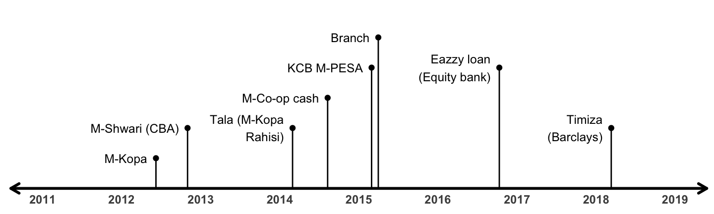
While commercial banks in partnerhsip with mobile network operators were first to offer digital loans, a number of start-ups offering loans through apps have emerged. Tala and Branch, for example, use alternative data such as call logs, GPS, social network data and contact lists obtained with permission of the user, to assess credit risk and tailor loan offers (such as reductions in interest rates as users build a credit history). Tala and Branch both have more than one million installs from Kenya’s google play store. Data on the number and performance of app-based loan accounts are not reported publicly since financial service providers that offer credit but do not take deposits are unlicensed and not regulated by CBK. This also means that app-based lenders are not subject to the interest-rate cap law that took effect in September of 2016 with the promulgation of the Banking Amendment Act, which limits loan interest rates to 4 percentage points above the central bank reference rate. Reports in the press indicate that to date Tala has disbursed over 5.6 million loans worth Ksh 28 billion to over 1 million customers since its launch in March of 2014 (known then as M-Kopo Rahisi) and by mid-2017 Branch had disbursed 1.5 million loans worth Ksh 3.63 billion to 350,000 customers since its launch in April of 2015 4.
On the demand-side, the introduction of digital loans met a need for a type of credit that had not been satisfied by other formal lenders. In 2009, only one in ten adults with a mobile phone had ever used a formal loan from a bank or non-bank financial institution (NBFI), five times as many (one in two adults) had used a loan from informal sources, such as friends and family, an employer, shopkeeper or savings group (Fig 1.7). By 2017, almost three in four adults with a mobile phone had ever used a formal loan (including mobile loans). Over this time period, the prevalance of formal borrowing among the poorest 40% of the adult population increased fivefold. The growth in exposure to formal loans accelerated significantly after 2013, suggesting just how influential digital loans have been in expanding the credit ‘frontier’ in Kenya.
Figure: Deposit & loan accounts, 2017
Fig 1.1: All commercial banks
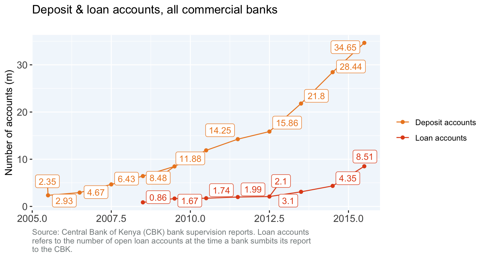 Download
Fig 1.2: CBA
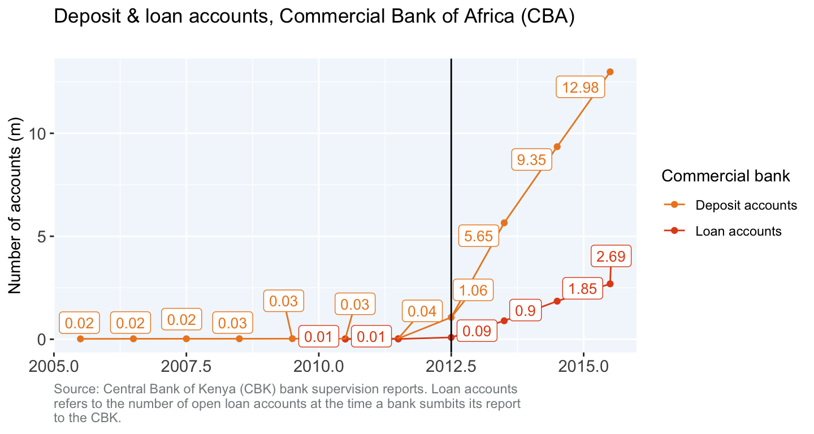 Download
Fig 1.3: Equity bank
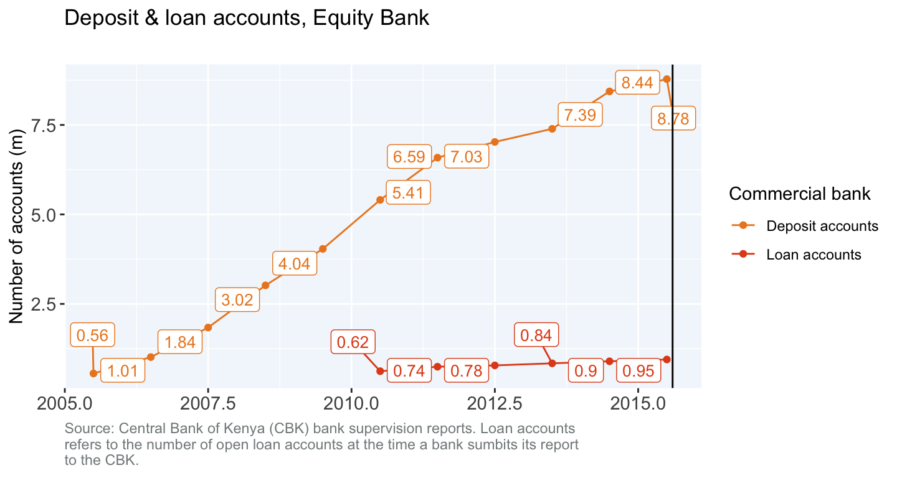 Download
Fig 1.4: KCB
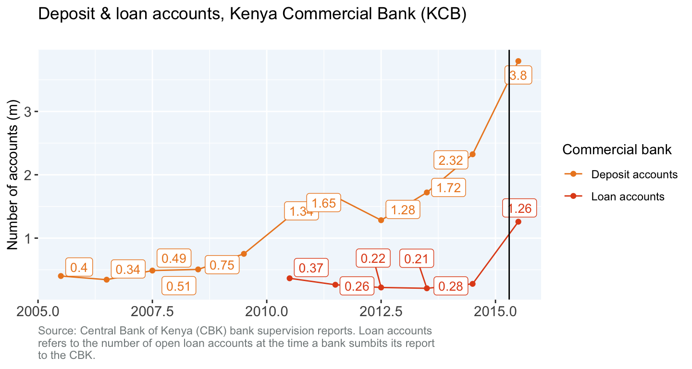 Download
Figure: Gross non-performing loans, banking sector
Fig 1.5: All commercial banks
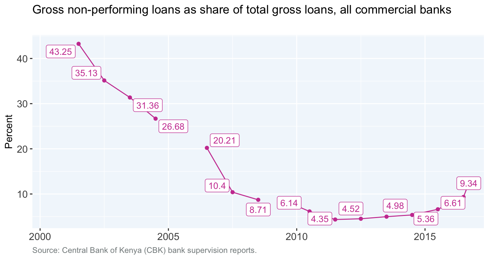 Download
Fig 1.6: By commercial bank
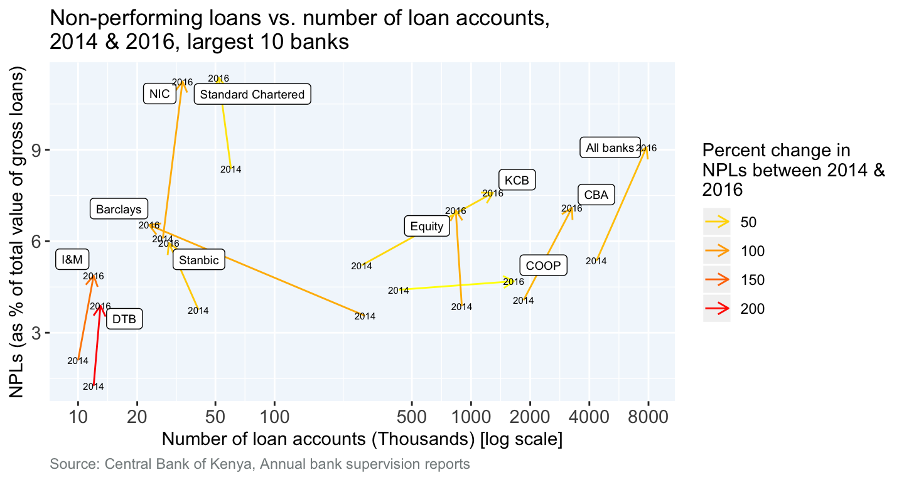 Download
Figure: Trends in exposure to formal loans, by population subgroups, 2006-2017
Fig 1.7: Ever used a formal loan
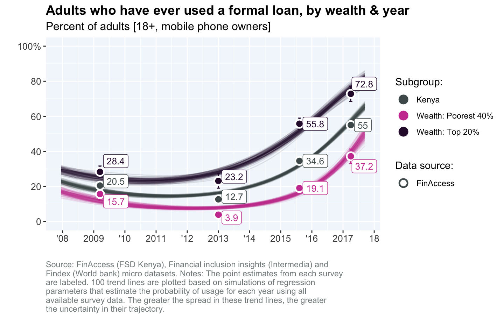 Download
Fig 1.8: Never used a formal loan

Perhaps due to just how rapidly digital credit has spread in Kenya, the patterns and impacts of its diffusion have not been researched extensively. The benefits of instant and accessible credit to low income borrowers without a formal credit history are potentially very important, especially in helping them manage volatile incomes and cope with adverse shocks that require an immediate response. In addition, given the potential harm to consumers and risks to the economy of widespread borrowing, the need for research in this domain is particularly acute. In an effort to help fill this knowledge gap, FSD Kenya partnered with CGAP, the Central Bank of Kenya and the Kenya Bureau of Statistics (KNBS) to conduct a nationally representative survey to better identify who is using digital credit, for what reasons and what their experience using these loans has been like. High level findings from this survey were shared in “Kenya’s digital credit revolution five years on” CGAP blog, and slide deck. The objective of this report is to present a wider range of analyses from the survey as will as incorporate data and findings from other survey programs and studies.
After a discussion of the data sources used throughout this report, the results of the analysis herein are organized into 9 sections, each guided by an overarching question, followed by a conclusion which highlights some key takeaways and areas for further research.
- Data sources
- Setting the stage: How rapidly is mobile banking being adopted in Kenya?
- Who are the main providers of digital credit?
- Which population segments are more likely to have adopted and used digital loans?
- Why do people take or avoid digital loans?
- How common are delinquent payments and defaults on digital loans?
- How do people repay their digital loans and why do they pay late?
- What are some of the more common experiences borrowers face as they use digital credit products?
- How do digital loans fit in the broader credit landscape?
- What are the key drivers of digital credit uptake, usage and repayment?
- Conclusions
2. Data sources
This report draws on data from available nationally representative demand-side surveys that touch on digital credit, including the 2013 and 2016 FinAccess household survey conducted by FSD Kenya, and the 2013 to 2016 financial inclusion insights surveys conducted by Intermedia. However, the report most heavily draws on data from the 2017 FinAccess “tracker” survey, an exprimental mobile phone survey designed by FSD Kenya to obtain more frequent estimates of access to and usage of financial services among adults in Kenya.
The 2017 FinAccess tracker was conducted between January and March of 2017. A random sample of 4,500 individuals above the age of 18 was drawn from a sampling frame of 6,710 adults who had been interviewed in person during the 2016 FinAccess household survey and who had provided their mobile phone number in agreement to be contacted in the future. A total of 3,129 phone interviews were successfully completed, yielding an overall attrition rate of 31 percent. A large share of the unreachable sample was located in some of the more remote counties of Kenya: Wajir, Marsabit, Samburu, Mandera, Garissa, Elgeyo Marakwet, Lamu and Bomet. In these counties almost half of the sample could not be reached.
While the original intention of the survey was to create a sample that could be representative of all adults, the constraint in this case was that our sampling frame was comprised primarily of adults that owned a mobile phone - which, on average, looks different from the population of non-mobile phone owners. Overall, 77 percent of the 2015 FinAccess sample owned a mobile phone, 88 percent of the FinAccess tracker sample frame (adults in the 2015 FinAccess sample who consented to be contacted in the future AND who provided contact details) owned a mobile phone, and 89.6 percent of the final sample owned a mobile phone. For this reason, the reference population used throughout this report are not all Kenyan adults above the age of 18, but the 77 percent of Kenyan adults above the age of 18 who own a mobile phone. All survey estimates presented in this report are weighted to account for the sample methodology and non-random attrition and generalize to the mobile-owning population above the age of 18.
To explore variations in the patterns of the adoption, usage and repayment of digital loans, results are presented for various population sub-groups defined by demographic and livelihood variables. Three population subgroups frequently used throughout this report - the poorest 40%, middle 40% and top 20% in terms of wealth - are based on an index constructed using the types of assets a respondent’s household owns, the quality of their housing materials, and availability of utilities (e.g. sewage, electricity and piped water). This asset index is designed to summarize in a single variable the relative material well-being position of a household. But unlike levels of income or spending which are measured in currency, the units of the weatlh index are not easily interpretable, so Fig 2.1 and Fig 2.2 provide a profile to help readers develop a more concrete picture of these population subgroups. Fig 2.3 and Fig 2.7 display the sizes of other mobile owning population sub-groups that are frequently referenced throughout the report.
Figure: Characterizing groups defined by wealth
Fig 2.1: By asset ownership
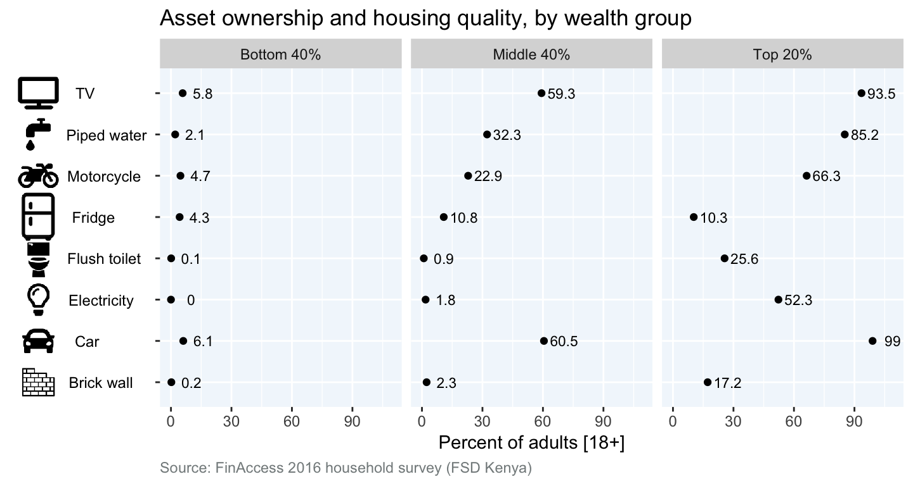 Download
Fig 2.2: By self reported income
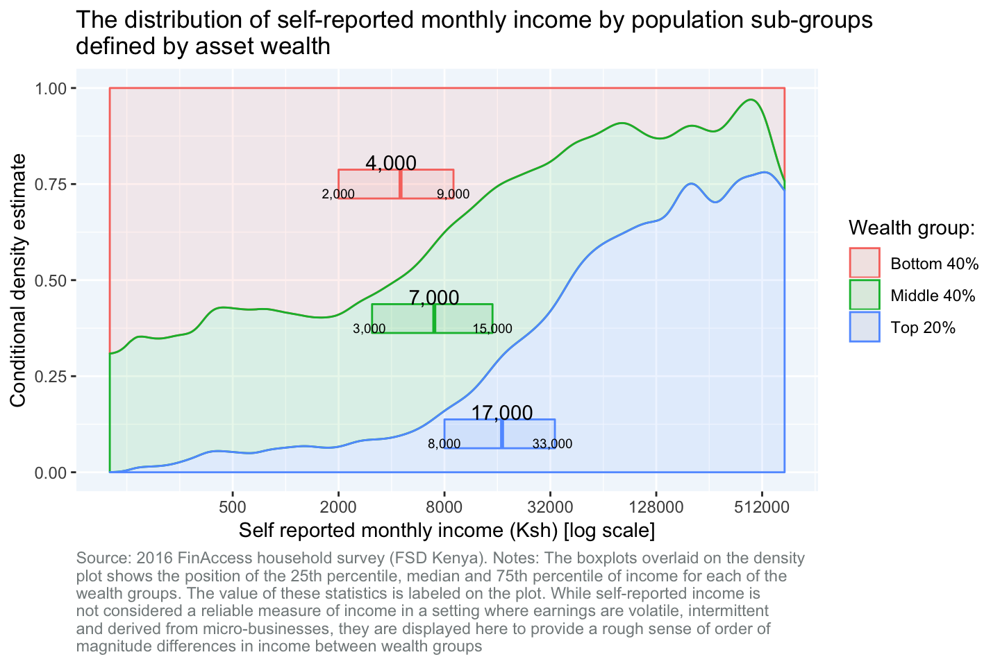 Download
Figure: Reference population sizes, 2017
Fig 11.3: Overall population
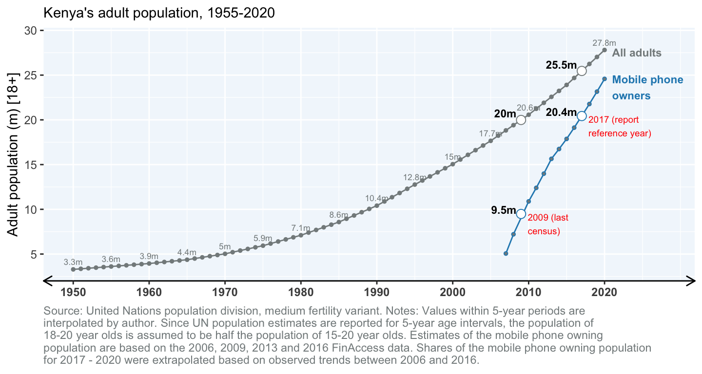 Download
Fig 2.3: By location
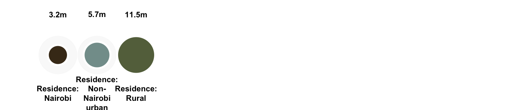
Fig 2.4: By demographic group
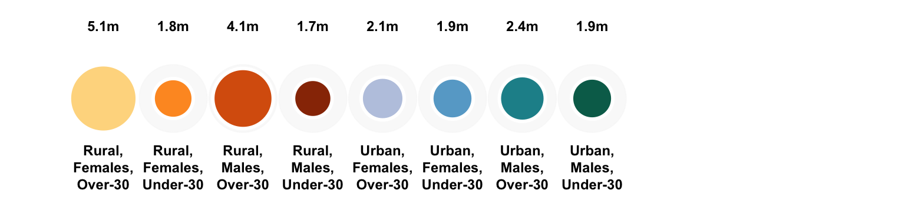
Fig 2.5: By livelihood
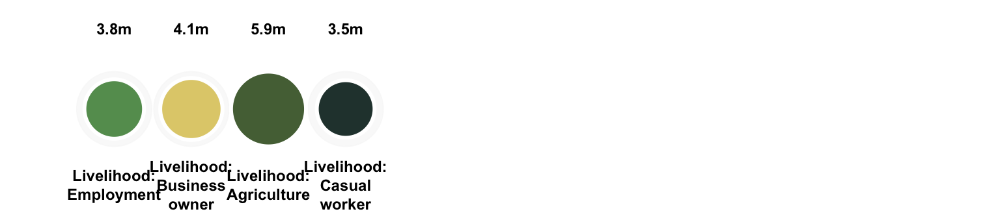
Fig 2.6: By education
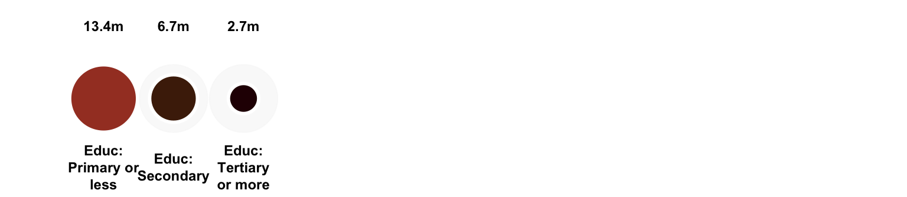
Fig 2.7: By age

3. Setting the stage: How has the adoption of mobile banking changed over time?
The emergence of digital lending is part of a broader trend stemming both from widespread adoption of mobile technology by consumers to facilitate their communication, payments, information and entertainment needs as well as by financial service providers to help lower delivery costs and reach untapped segments of the population.
Between late 2013 and late 2017, the share of mobile-owning adults actively using either the savings or loan features of mobile banking more than doubled, increasing from 12.4 to 30.3 percent at an average annual rate of 24.4 percent (Fig 3.1). Adoption of digital credit among the wealthiest 20% of the population, grew at almost twice the rate as among the poorest 40%. By 2017, almost 1 in 2 of Kenya’s wealthiest mobile owners were using digital credit, compared to less than 1 in 5 of Kenya’s poorest.
The evolution of mobile banking usage rates in Nairobi and other urban areas were similar (Fig 3.2), growing at an average annual rate of about 20 percent per year. In rural areas, the share of mobile-owning adults using mobile banking increased from 6 to 23.6 percent, at an average annual rate of 33.3 percent.
In late 2013, men were about twice as likely as women to be using mobile banking, but in late 2017, with 33 percent of men and 27 percent of women using mobile banking, men were only 25 percent more likely to be using digital loans (Fig 3.3).
Young adults in the 18-25 age bracket were initially quicker to adopt mobile banking than older prime working age adults in the 25-45 year age bracket, but by 2017, both groups were just as likely users of mobile banking (Fig 3.4). Between 2013 and 2017 the rate of adoption of mobile banking among 18-25 year olds was about half that of other age groups, among which adoption grow at an average annual rate of approximately 30 percent per year.
In late 2013, about 1 in 4 business owners, employed workers and casual workers used mobile banking (Fig 3.5), compared to only 1 in 10 agriculture. In the subsequent years, usage of mobile banking grew notably among the employed and business workers, but not among casuals, such that by 2017 over 40% of the employed and business workers were using mobile banking, while the share of casual workers using digital credit remained at its 2013 level.
4. How prevalent is digital borrowing and who provides the loans?
34.8 percent of Kenya’s adult, mobile phone owning population (approximately 7 million people) have used digital credit. Among these borrowers, 64.2 percent are active: they either had an outstanding digital loan at the time of the survey, or had taken a loan in the 3 months prior to the survey. Individuals in rural areas represent both the majority of digital borrowers as well as the largest addressable market (individuals with mobile phones who have not used digital loans) Fig 4.1.
A dominant majority (over three quarters) of digital borrowers across both urban and rural-markets have taken loans provided by M-Shwari, around a third have taken loans from KCB M-PESA and about 1 in 10 have taken loans from Equity Eazzy. The two leading app-based digital loan products (Tala & Branch) have jointly captured around 6.7% of the market (approximately 1.3 million adults) (Fig 4.2). The variation in market share by provider across rural and urban areas is minimal.
Figure: The market landscape
Figure: Primary provider of digital credit
5. Which population segments have been adopted mobile borrowing?
Adoption of digital credit has been greatest among adults in urban areas (Fig 5.1). In Nairobi, about 1 in 2 mobile phone owners have used digital credit. In urban areas outside of Nairobi, slightly fewer - about 45 percent - have borrowed from mobile loan providers. Rural mobile phone owners are about half as likely as those in urban areas to have used digital credit.
Men are more likely to take mobile loans than women - especially in rural areas - but the differences are relatively small. In rural areas, men are about 25 percent more likely to have taken a digital loan than women, while in Nairobi and other urban areas, the percent differences in borrowing are 7 and 11 percent, respectively (Fig 5.8).
Fig 5.2 displays the share of mobile phone owning digital borrowers for segments of the population defined by location, gender and age. The general pattern observed previously holds: urban areas have almost twice the mobile credit adoption rates and differences in adoption by gender are relatively small. However, age differences in adoption are very pronounced among mobile-owning women in rural areas: women under the age of 30 are about 50 percent more likely to have used or be using digital credit compared to women over 30 years of age. Rural women under the age of 30 are more active digital credit users than men of their same age cohort, whereas the opposite is true in urban areas.
Fig 5.13 shows the number of active digital borrowrs per 100 inactive digital borrowrs by demographic segment. A value of 100 means that there are equal numbers of active to inactive borrowers in a partciular segment. Overall, active borrowers outnumber inactive borrowrs across most population segments by close to a factor of 2. Three demographic groups have active borrowers that are more than double in size than inactive borrowers: urban, males over the age of 30, urban, females under the age of 30 and rural, females over the age of 30. Rural, males under the age of 30 have the smallest share of active digital borrowers (9.2 active borrowers for every 10 inactive borrowers) across all demographic groups. This may suggest that young men in rural areas have either had poor experiences with digital credit, mismanaged their first loans or have not found digital borrowing particularly value adding, relative to other groups.
Digital borrowing is most common among mobile owners who are wage employed or run their own business and least common among those in agriculture or who are dependent on social transfers (Fig 5.3). 1 in 2 mobile owners who are wage employed use digital credit compared to only 1 in 4 mobile owners in agriculture. It is worth noting that if the need for credit is related to income volatility (to bridge income shortfalls), one would expect to see higher usage rates for more vulnerable livelihoods such as agriculture and casual work. However, this is not the case. This pattern could be related to aspects of the automated credit scoring decisions and that data that feeds into those decisions that make it more difficut for these groups to gain access to loans. It may also be that the more volatile your income, the more you are afraid of taking loans as your ability to repay is uncertain. These factors are explored in section 4.
In addition to being the most common users of digital credit, employed workers are by far the most active borrowers: Among employed workers, active digital borrowers outnumber inactive ones by a factor of 3. Digital borrowers that depend on casual work or agriculture are the least active (Fig 5.3). To the extent that frequent and repeated usage of digital credit requires a sustained ability to pay back the principle and interest on short term loans, this pattern is perhaps not surprising. But this is still puzzling in the sense that if workers with more stable income profiles need small value, short term credit less, on average, than workers with unstable incomes, why are they using digital credit so frequently? It may be that it is lower-skill, low-wage earners with limited savings capacity that are driving a large share of the demand for digital loans, perhaps as a salary advance, in order to make ends meet between paychecks. Some anecdotal evidence supports this argument.
While 1 in 2 mobile owners in the wealthiest 20% of the population use digital credit, only 1 in 5 of the poorest 20% do. (Fig 5.4). However, the number of active to inactive borrowers among the poorest and richest mobile owners are similar. With about twice the number of active to inactive borrowers, the middle 40% of the population in wealth terms is the most active segment (Fig 5.15).
Educational attainment is strongly associated with digital borrowing and the relationship holds irrespective of the location or wealth of the household (Fig 5.9, Fig 5.10). Overall, mobile owners who have some level of tertiary education are almost three times as likely to be digital borrowers than mobile owners with primary education or less. The fact that education related differences persist when controlling for wealth suggests that digital borrowing is facilitated by skills or networks (not just the income flow) that more education makes possible.
Digital borrowing does not appear to be associated with the vulnerability5 of the mobile owner (Fig 5.6), even after controlling for their wealth (Fig 5.11). If vulnerability is a proxy for the degree to which an individal faces more severe or frequent liquidity challenges (i.e. the ability to access cash-equivalents to meet short term needs), then the data suggests that digital credit is not a preferred instrument to alleviate those challenges. The most vulnerable mobile owners are neither more common nor more active users of digital credit than the least vulnerable. Among the poorest 40% of the mobile owning population, more vulnerability is associated with less digital borrowing. This could tie into risk aversion, in that people with more vulnerable livelihoods may be more reluctant to take on a strict repayment obligation that they themselves know they may not be able to honor, especially when terms are inflexible and not repaying carries uncertain risks or additional penalties. Section 4 examines the role of fear in driving avoidance of digital credit, even when a need for credit exists.
Figure: Digital borrowing segments, by population subgroups, 2017
Fig 5.1: By location
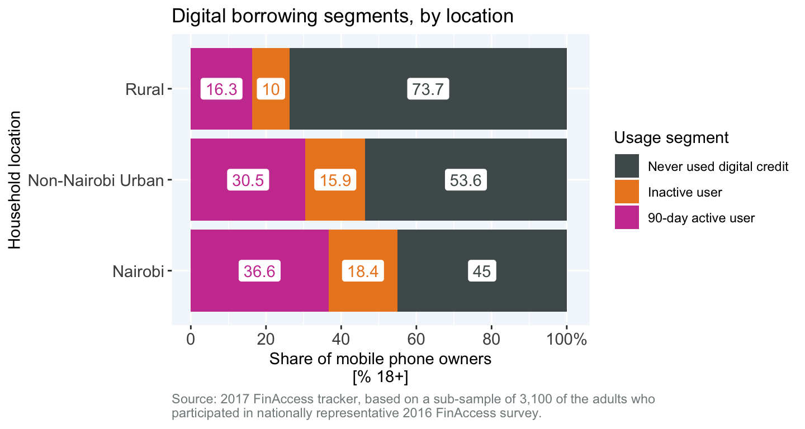 Download
Fig 5.2: By demographic group
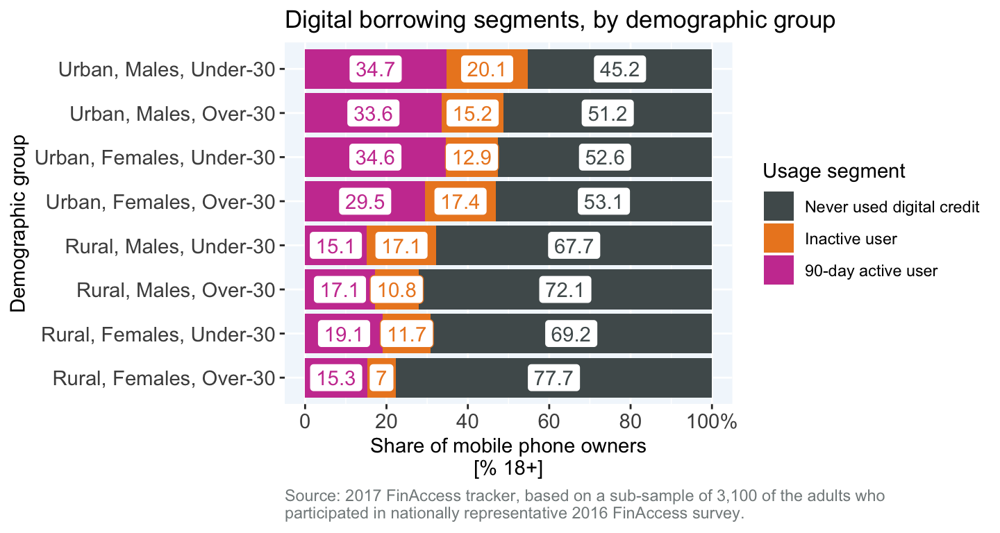 Download
Fig 5.3: By livelihood
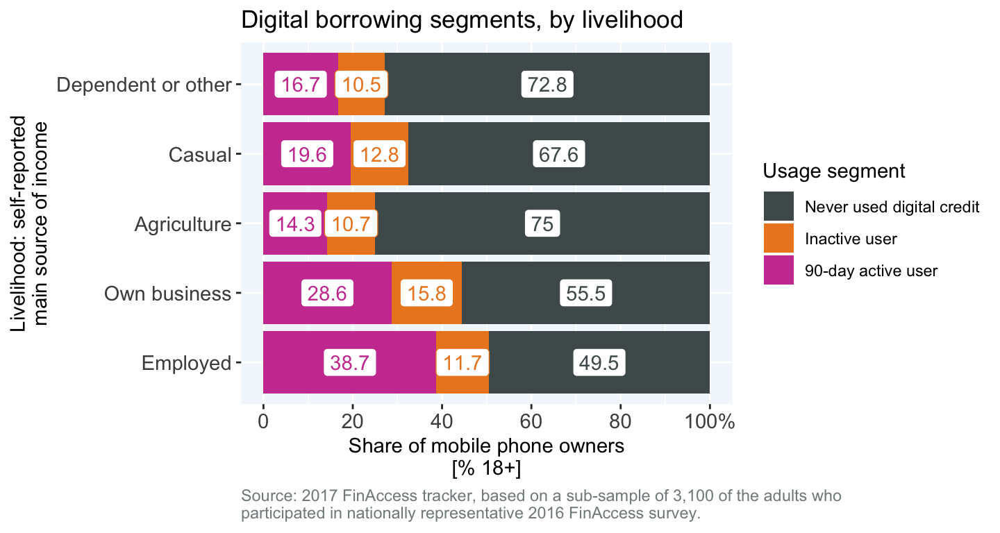 Download
Fig 5.4: By wealth
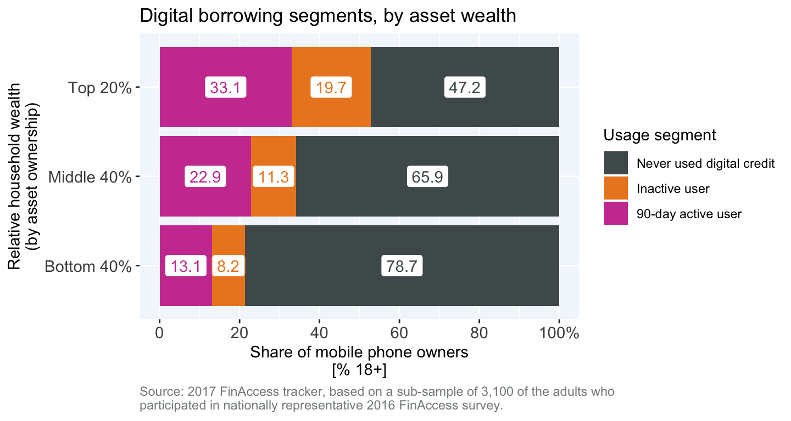 Download
Fig 5.5: By education
## Warning: Removed 1 rows containing missing values (geom_bar).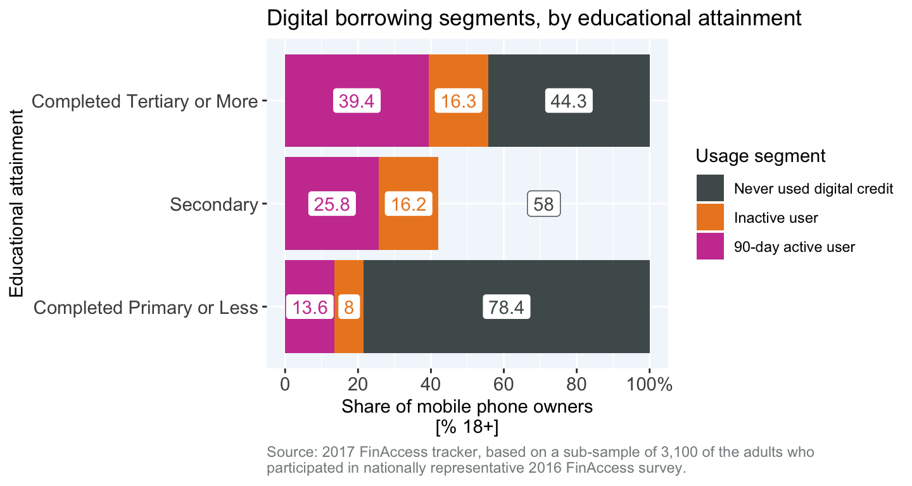 Download
Fig 5.6: By vulnerability
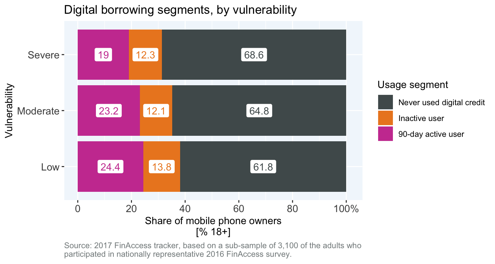 Download
Fig 5.7: By access strand
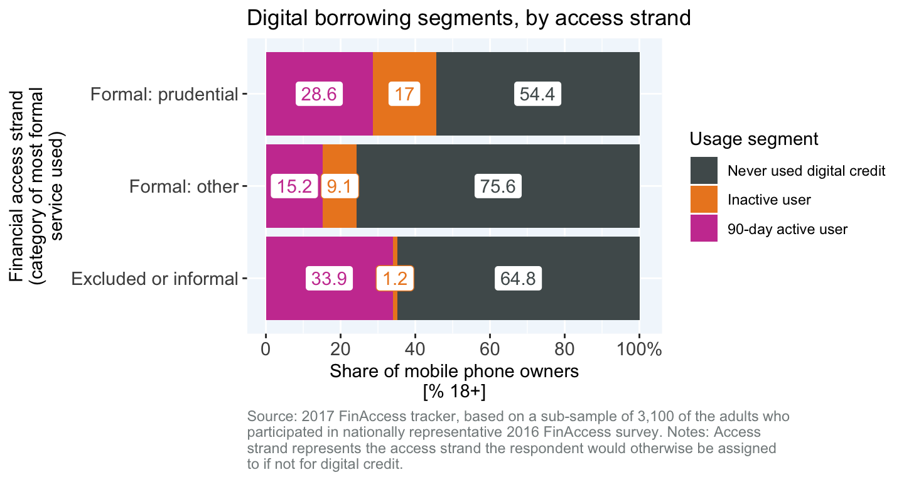 Download
Figure: Digital borrowers, by population subgroups, 2017
Fig 5.8: By location & gender
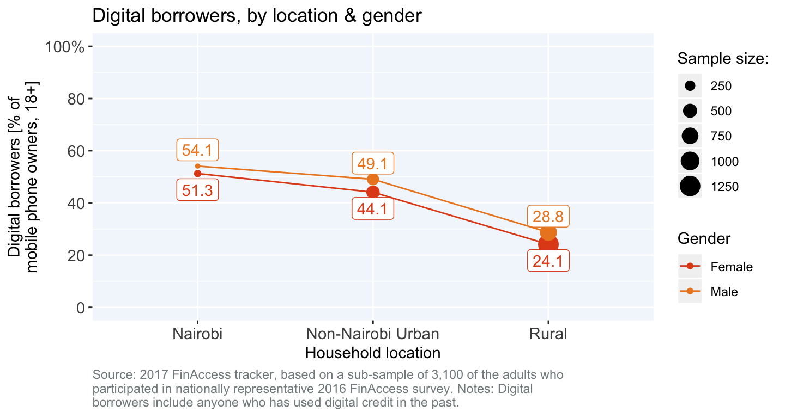 Download
Fig 5.9: By education & location
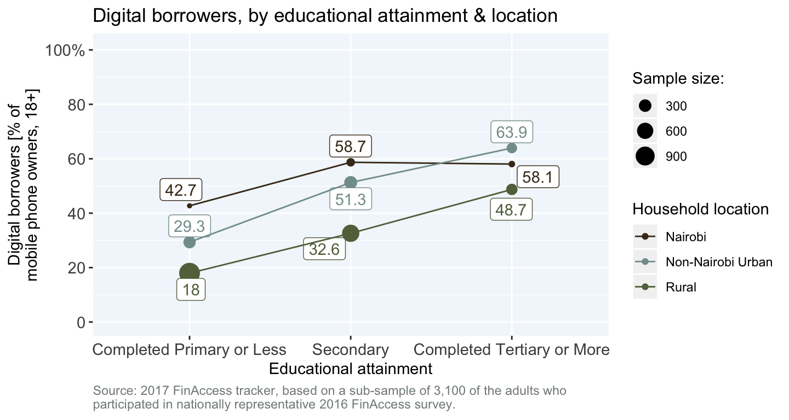 Download
Fig 5.10: By education & wealth
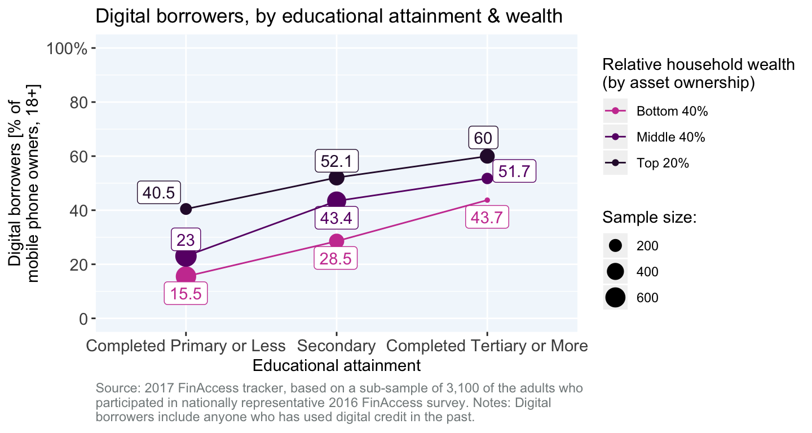 Download
Fig 5.11: By vulnerability & wealth
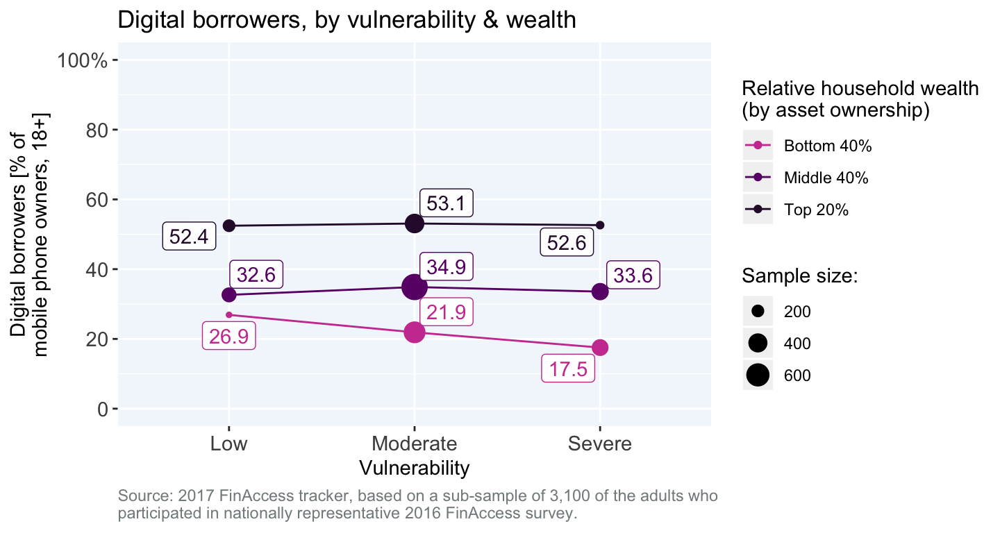 Download
Fig 5.12: By wealth & access strand
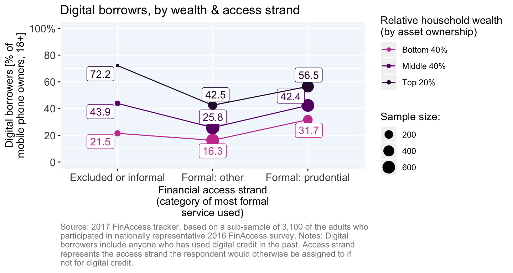 Download
6. Why do people take or avoid digital loans?
BOX 2: Early adopters of M-Shwari were motivated by curiousity and the desire to borrow
In 2012, FSD Kenya in collaboration with BFA and Digital Divide Data, conducted the Kenya Financial Diaries study. Towards the end of the study, about 9% of the 298 households that participated had adopted M-Shwari, but only a third were able to access a loan. Interviews with these early adopters revealed that the possibility of accessing to credit, rather than the savings features, as well as curiousity motivated their decision to register for the service.
We asked M-Shwari customers why they had opened an account, their answers included: “[I] thought it would be handy to get quick loans when needed”, “to borrow a loan”, “to access its loan services”, “to get a loan when I need it”, “to experiment”, “to experience a new financial instrument”.
A member of the research team also noted how one borrower had discovered, through experimentation, how to increase the loan limit: “Eli has also learned how to go about the product. To increase his credit rating, whenever he is paid by M-PESA, he first of all takes it all to his M-shwari account and then withdraws it a few minutes later. He tells me ‘They will look at how much and how many times I deposit, so ihave to do it.’ He then requests a loan, and he is given. His loan limit currently has been increased from Ksh2,000 to Ksh2,300.”
Fear of loans, lack of need and lack of awareness are the three most common reasons that mobile owners do not borrow digitally. The three least common reasons were dislike of certain product features (such as the size of the loan or the loan period), lack of trust and lack of account requirements (such as not having a mobile money account).
Women were about 35 percent more likely than men to cite fear as a reason for not borrowing (Fig 6.1). Agricultural and casual workers were also substantially more likely to cite fear as a reason for avoiding digital loans than employed workers (Fig 6.3). In addition, individuals with greater vulnerabilitywere also more likely to cite fear and lack of awareness as key reasons they avoided using digital credit compared to less vulnerable (Fig 6.4).
Not needing a loan was a key reason young, urban men, the employed and the wealthiest mobile owners avoided digital credit. Lack of awareness was a key reason mobile owners in rural areas (with the exception of men under the age of 30), the poorest 40% and agricultural workers had not used digital credit (Fig 6.2, Fig 6.3).
About 1 in 4 rural, males under the age of 30 cited that not qualifying was a reason they had not taken a digital loan (Fig 6.1) suggesting that this group may be more likely labeled as ineligible for loans by the credit scoring mechanisms used to determine creditworthiness.
Convenience and disbursement speed are the two primary reasons digital borrowers prefer digital loans to other types of loans. These perceived advantages are consistent across most population segments. Overall, close to 3 in 4 digital borrowers cited convenience as a key advantage of digital credit, while 41 percent cited disbursement speed. The three least commonly reported advantages, were fees, loan size and privacy (Fig 6.5). With almost 9 in 10 citing convenience, urban females under the age of 30 appeared to particularly value the ease with which they could access credit, relative to other groups. Rural youth, on the other hand, seem to disproportionately value disbursement speed as a key advantage of digital credit.
Figure: Reasons people avoid digital credit, by population subgroups, 2017
Fig 6.1: By demographic group
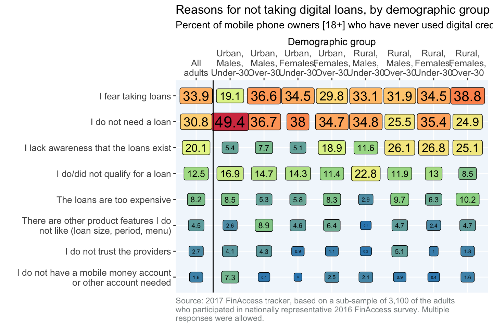 Download
Fig 6.2: By wealth
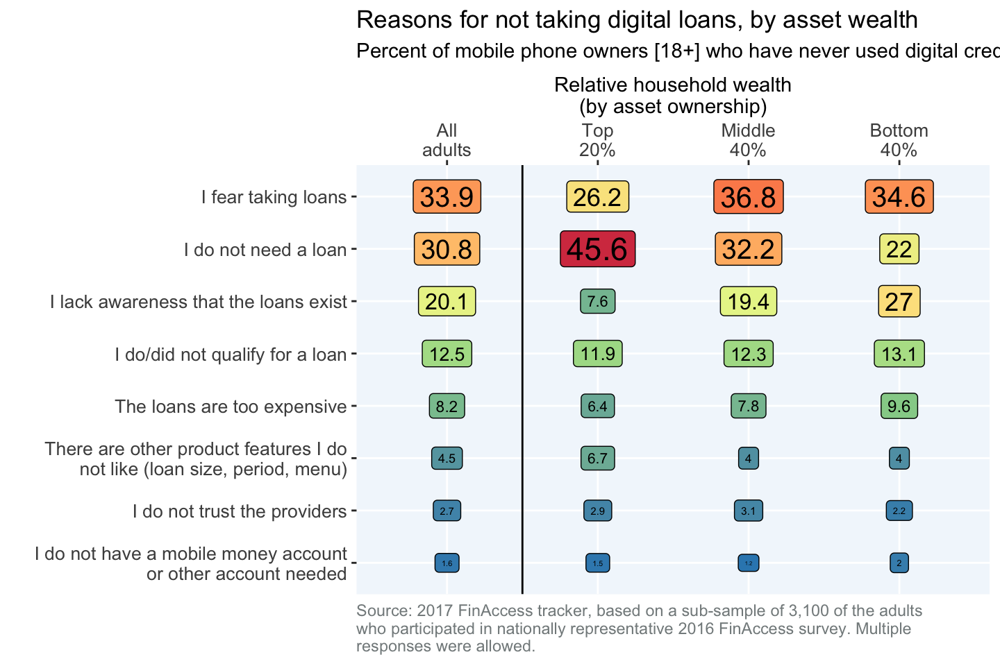 Download
Fig 6.3: By livelihood
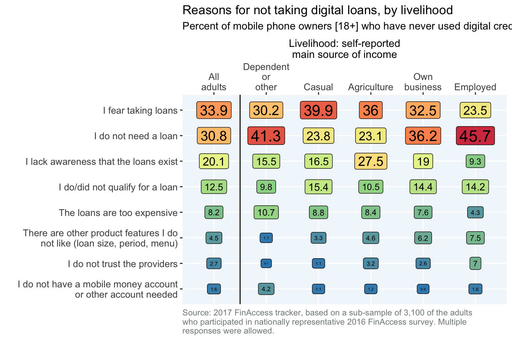 Download
Fig 6.4: By vulnerability
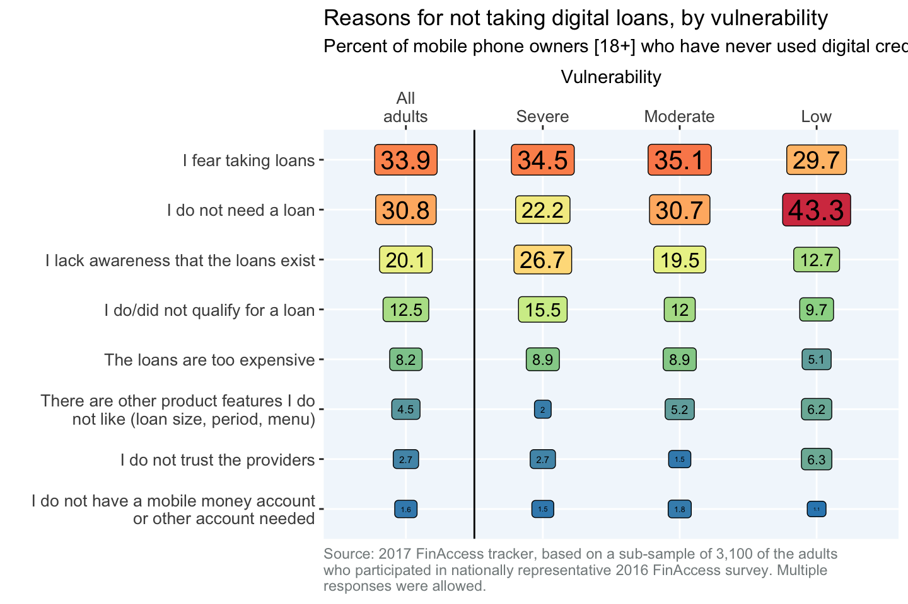 Download
Figure: Reasons mobile loans are preferred to loans from other providers, by population subgroups, 2017
Fig 6.5: By demographic group
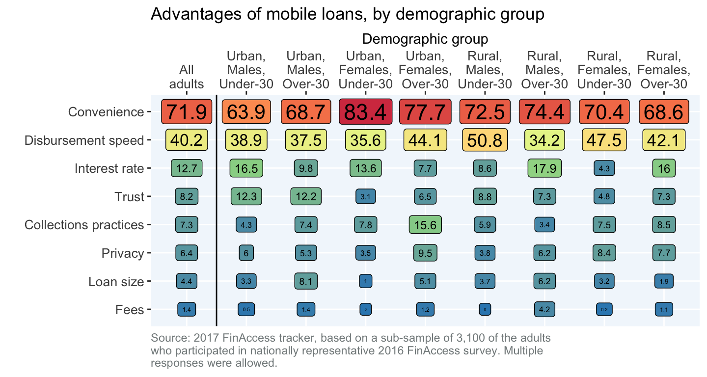 Download
Fig 6.6: By wealth
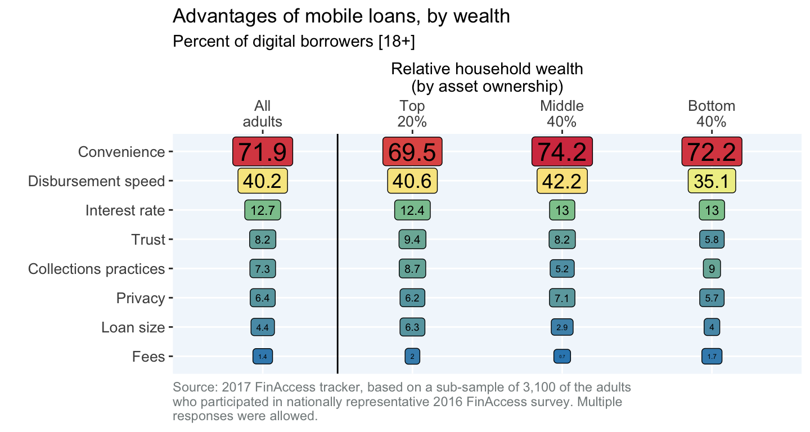 Download
Fig 6.7: By livelihood
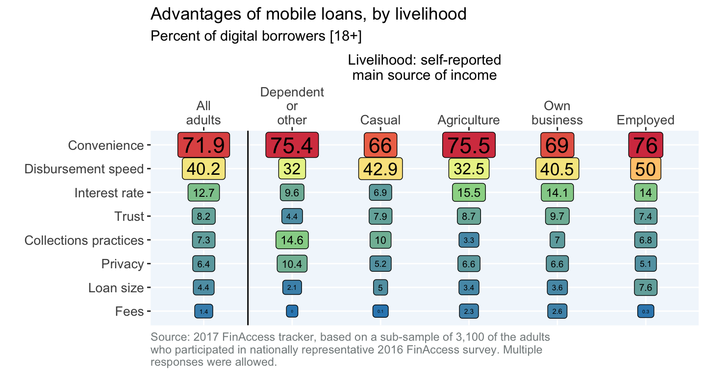 Download
Fig 6.8: By digital loan provider
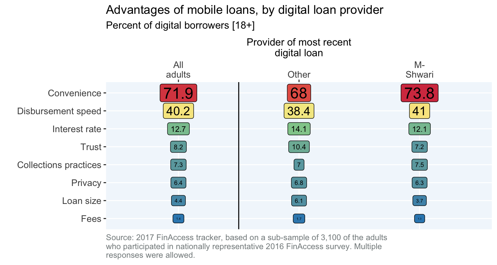 Download
Just over one in three digital borrowers reportedly used their most recent digital loan for a business or farm application or to meet ordinary day to day needs (Fig 6.9). The next most likely uses were to pay for education or to purchase airtime. The least commonly reported uses of digital loans was to cope with non-medical emergencies and to bet.
Using the most recent digital loan for meeting day to day needs was most common for urban, men under the age of 30 (45 percent), while a business or farm application was most commonly cited among urban, women over the age of 30 (Fig 6.9). Rural, women over the age of 30 were relatively more likely to use their most recent digital laon to purchase airtime. Urban men and women under the age of 30 reported the most diverse set of use-cases for their most recent loan.
The poorest digital borrowers were more likely to report using their last digital loan for education and personal or household goods, relative to other wealth groups (Fig 6.10).
M-Shwari loans are more likely used to support ordinary day to day needs and less likely to support business or farm activities than loans from other providers (Fig 6.12). This could relate to the higher average loan size or longer loan terms available from other providers and their suitability for investment in higher value assets.
7. How common is late payment & default on digital loans?
BOX 3: What happens when you default on a digital loan?
One of the emerging concerns with digital credit stems from the observation that of 10.6 million borrowers listed with TransUnion - one of Kenya’s three licensed credit reference bureaus (CRB) - 2.7 million are negative, in that lenders have submitted the names of those borrowers to the CRB due to a non-performing loan (NPL). CRB reporting varies by lender. An M-Shwari loan, for example, is repayable within 30 days, if the loan isn’t repaid by day 30, the outstanding amount is automatically rolled over for 30 more days and an additional ‘roll-over fee’ is incurred 6. CBA pursues a series of strategies to encourage repayment, including sending SMS warnings that the borrower will be reported to the CRB, but the borrower will not be listed until 120 days after the loan was taken.
In Kenya, the act of submitting a report based on an NPL is known, somewhat threatiningly, as blacklisting. Of the 2.7 million negative reports on digital loans in TransUnion’s database, 400,000 are for loans of less than USD 2 7. The trouble for borrowers is that the presence of even a single negative report can adversely affect their chances of borrowing from any lender, regardless of their overall borrowing history 8.
One of the challenges with the way CRB data has historically been used by lenders is its use as a binary check for red-flags, rather than using the borrower’s overall credit performance (say based on a credit score) using both positive and negative listings. Most banks require potential borrowers with negative listings to first pay outstanding amounts on listed loans, and to then obtain a clearance certificate from the CRB to prove to the lender that outstanding debts have been settled. A clearance certificate from one of Kenya’s CRBs runs at Ksh 2,200 (or about USD 22) which can is twenty times the size of M-Shwari’s lowest loan limit of Ksh 200.
It is worth noting that default and non-repayment are likely to be systematically under-reported by survey respondents since non-repayment on debt can be shameful to admit for some, and therefore survey-based estimates of non-repayment and default are likely to underestimate the true rates. The degree of this bias is unknown, but comparisons of survey-based default rates with default rates obtained from provider data could shed light on how off-the mark the survey estimates in this section are.
Overall, about 1 in 2 digital borrowers reported to have paid a loan late while 12.5 percent reported to have defaulted on a loan. Fig 7.1 divides digital borrowers into three mutually exclusive groups: borrowers who never repaid late or defaulted, borrowers who repaid late but did not default and borrowers who defaulted.
About 60 percent of rural females over the age of 30 have never repaid late or defaulted, the best performance of any demographic group. However, this group also has the second highest default rate - 15.8 percent of digital borrowers in the group - of the eight demographic segments in (Fig 7.1). The demographic segment with the poorest repayment performance are rural males under the age of 30, among which 2 in 3 digital borrowers have either defaulted or paid late (almost 1 in 5 have defaulted). The segment with the lowest default rate - 6.3 percent - are urban males under the age of 30.
While default rates decrease with more wealth, overall late repayment rates increase. For example, while 14 percent of digital borrowers that belong to the poorest 40% of the population have defaulted on a loan, 29 percent paid late but did not default. For digital borrowers in the richest 20% of the population, 10 percent defaulted - lower than their poorer counterparts, but 39 percent paid late without defaulting - about 50 percent more than the digital borrowers in the poorest 40% of the population (Fig 7.2).
Default and late repayment do not vary significantly across livelihoods (Fig 7.3), there is some variation in the default rates which are slightly higher for digital borrowers who depend on agriculture or casual work, but the differences are small and not statistically significant.
M-Shwari borrowers are about 30 percent more likely to pay late or default than borrowers of digital loans from other providers. Among digital borrowers whose last loan was M-Shwari, close to 14 percent reporting having defaulted on a digital loan compared to 8 percent of digital borrowers whose last loan was from another provider (Fig 7.3).
Figure: Digital borrower repayment segments, by population subgroups, 2017
Fig 7.1: By demographic group
Fig 7.2: By wealth
Fig 7.3: By livelihood
Fig 7.4: By digital loan provider
Figure: Late digital loan repayers, by population subgroups, 2017
Fig 7.5: By education & wealth
Fig 7.6: By vulnerability & wealth
Fig 7.7: By livelihood & wealth
8. How do people repay their digital loans and why do they pay late?
Over two-thirds of digital borrowers report having had to use funds from sources other than current income to repay a digital loan. About half of digital borrowers report having had to use their savings and about one in three digital borrowers reported having had to use one or more potentially adverse repayment strategies: borrow more, reduce food purchases, skip a school fee payment, sell assets or forego medical treatment. Of these, the most common are reducing food purchases (1 in 5 digital borrowers) and borrowing more money (16 percent of digital borrowers). Individuals who have never repaid late or defaulted are the most likely to have used current income to repay a loan. The data also suggests that a key factor dictating whether someone repays a loan late versus defaulting is the ability to draw on a reserve of funds. Late payers who have not defaulted are about 12 percent more likely to use savings to repay a loan and about 20 percent likely to reduce food purchases, borrow more or pursue other adverse repayment strategies (Fig 8.1).
Looking at repayment modalities across demographic groups (Fig 8.2) reveals that urban males above the age of 30 are most likely current income to repay their digital loans, while urban females over the age of 30 and rural females under the age of 30 are the most likely to have used non-income, non-savings strategies to repay digital loans.
While the top 20% of borrowers in terms of asset wealth are more likely to report having used savings to repay a digital loan, the likelihood of using funds other than from savings or current income to repay digital loans is not influenced by asset wealth (Fig 8.3). This is not the case with vulnerability. About 1 in 2 of the most severely vulnerable digital borrowers reported reducing food purchases, borrowing money, skipping school fee payments, selling assets or foregoing medical expenses in order to repay a digital loan, compared with only 1 in 3 of moderately vulnerable digital borrowers and 1 in 7 low vulnerability borrowers.
The four most common reason digital borrowers who had paid a loan late gave for late repayment was poor business performance (21%), losing a job or source of income (19%), not planning well enough (17%) and saying that funds were tied up with more important expenditures (16%) (Fig 8.5).
However the reasons vary significantly by demographic groups, wealth groups and vulnerability groups. For example, for urban males, losing a job was the most common reason for paying late, whereas for urban females, poor business performance and prioritizing basic needs were. For rural males, not planning well enough was the most common response and rural females were almost twice as likely than any other demographic group to offer “No particular reason” as the primary reason they paid late.
Figure: Modes of repayment, by population subgroups, 2017
Fig 8.1: By repayment segment
Fig 8.2: By demographic segment
Fig 8.3: By wealth
Fig 8.4: By vulnerability
9. What are common customer experiences & perceptions with digital loans?
The relatively high rates of late repayment on digital loans seen in section 8 are reflected in the common reference to receiving calls and SMS messages from lenders to encourage repayemnt on an overdue balance as part of the borrowing experience (Fig 9.1). About 1 in 4 digital borrowers felt the repayment period was too short, 14 percent reported that the lender unexpectedly charged fees or withdrew money from their savings account or mobile money wallet and 10 percent felt that the cost of the loan was too high. Around 8 percent were either reported to the credit bureau, did not fully understand the loan terms or needed to contact customer care but could not figure out how.
These findings were fairly consistent among digital borrowers across demographic groups with a few exceptions. Urban males were the most likely to report getting hit with unexpected fees or withdrawals and rural males under the age of 30 were the most likely to cite getting reported to the credit bureau by the lender.
Individuals with primary schooling or less were almost twice as likely to cite having difficulty understanding loan term or contacting customer care (Fig 9.2) compared to individuals with secondary or tertiary educational attainment. They were also more likely to feel that they repayment period was too short. Interestingly the variation in these experiences by digital borrower segments defined by education are greater than those defined by wealth (Fig 9.3).


{kind=link}
{kind=link}
{kind=link}
{kind=link}
{kind=link}
{kind=link}
{kind=link}
{kind=link}
{kind=link}
{kind=link}
{kind=link}
{kind=link}
{kind=link}
{kind=link}
{kind=link}
{kind=link}
{kind=link}
{kind=link}
{kind=link}
{kind=link}
{kind=link}
{kind=link}
{kind=link}
{kind=link}
{kind=link}
{kind=link}
{kind=link}
{kind=link}
{kind=link}
{kind=link}
{kind=link}
{kind=link}
{kind=link}
{kind=link}
{kind=link}
{kind=link}
{kind=link}
{kind=link}
{kind=link}
{kind=link}
{kind=link}
{kind=link}
{kind=link}
{kind=link}
{kind=link}
{kind=link}
{kind=link}
{kind=link}
{kind=link}
{kind=link}
{kind=link}
{kind=link}
{kind=link}
{kind=link}
{kind=link}
{kind=link}
{kind=link}
{kind=link}
{kind=link}
{kind=link}
{kind=link}
{kind=link}
{kind=link}
{kind=link}
{kind=link}
{kind=link}
{kind=link}
{kind=link}
10. How have digital loans influenced the broader credit landscape?
Looking at the overall credit landscape (Fig 11.4), mobile loans seem to have taken the position of an all-purpose borrowing tool with broad appeal. With close to 19 percent of mobile owners currently using them (at the time the survey was conducted), mobile loans, alongside loans from the social network (friends, family, neighbors and other associates) are now the most common types of loans in use. The ‘use case’ profile of mobile loans most closely resembles loans from the social network which are used for a diverse set purposes: mostly for day to day needs, working capital and education payments, but also for emergencies, personal consumption and other payments. Other sources of loans, such as those from a shopkeeper, savings group or bank, are used for a more concentrated set of use cases. For the largest-value use cases, such as buying land, a house or a vehicle, only bank, SACCO and MFI loans are used.
Mobile loans are more frequently used to pay utility bills, airtime (both of which are most conveniently paid for with a mobile money account). For these use cases there is a natural fit: use digitial money to pay for a good or service which accepts (perhaps exclusively) digital payments. This does raise the question of whether unnecessary or excessive borrowing might occur if people aren’t in the habit of saving digitally (in a mobile money or mobile banking account) yet need to purchase items or pay bills electronically. The adoption of smartphones and expansion of e-commerce will likely increase the demand for digital lending in the years to come.
Figure: Prevalance of borrowing and uses of current loans, 2017
Fig 11.4: By loan provider and use case
{kind=link}
As mentioned earlier, the impact of digital loans on access to credit has been significant. Fig 10.2 shows trends in the percent of adults currently using any kind of loan (from either a formal or informal provider) by digital borrowing status. In early 2013, 1 in 3 mobile owners were using a loan, by mid-2017, almost 1 in 2 mobile owners were using a mobile loan. The trend line for mobile owners who never borrowed digitally provides a rough counterfactual for loan usage had digital lending not emerged, suggesting that digital lending expanded access to loans for an additional 13 percent of mobile phone owners, amounting to 2.55 million people who might not have otherwise used credit.
The emergence of digital credit does not seem to have diminished the likelihood of people taking informal loans (Fig 10.3). Both of these analyses suggest that for the most part digital credit has expanded total access to credit rather than shifted people away from other sources of loans.
Figure: The relationship between digital borrowing and the probability of using different types of credit, 2006-2017
Fig 10.2: Probability of using any loan (formal or informal)
{kind=link}
Fig 10.3: Probability of using any formal loan
{kind=link}
Fig 10.4: Probability of using any informal loan
{kind=link}
Fig 10.5: Probability of using shopkeeper credit
{kind=link}
11. What are the key drivers of digital credit usage and repayment?
The analyses presented in Sections 1 through 8, explored descriptive differences in the patterns of usage and repayment of digital credit. This section uses a multivariate regression framework to try and identify the factors which are independently important in driving digital credit behavior.
Fig 11.1 and Fig 11.2 show the marginal effects of individual socio-economic, personal and behavioral characteristics on the probability of 7 different digitial credit behaviors, holding all other characteristics constant. To clarify how these effects are intepreted, lets take an example from Model 1 which explores the influence of a range of factors on the probability of using digital credit among adult mobile phone owners. The effect associated with primary education is -14.6 percent. This means that having attained enough schooling to have at most completed primary education, is associated with a 31.6 percent (not percentage point) reduction in the probability of using digital credit relative to someone with tertiary education. The model’s average predicted probability for a mobile phone owner to use digital credit is 29.1 percent (refered to as the base probabilty in the figure).
The probability of uptake of digital credit (having taken a mobile loan at least once at some point in the past) for mobile phone owners decreases for people above the age of 55 , lower levels of educational attainment, lower levels of household wealth and location in a rural area (Fig 11.1 - Model 1). It also decreases for people who are dependent on transfers as a source of livelihood. The probability increases for casual workers (relative to employed workers), being able to correctly divide (evidence of greater numeracy), having had a bank loan in the past (which may suggest experience with formal credit gives people greater security, knowledge to try new credit modalities) and having used mobile betting in the past (which may suggest that betting pulls some people to digital credit). Prior use of mobile betting has the largest effect (in terms of magnitude). There does not seem to be a relationship between uptake of digital credit and vulnerability.
The factors most strongly related to 90-day active usage and 7-day active usage are different ). Having moderate or high vulnerability, having used a bank or chama loan before and being above the age of 55, are the factors that increase the probability of 90-day usage among digital borrowers by 10 to 15 percent (Fig 11.1 - Models 2 & 3). With the exception of digital borrowers with primary or less education and those who depend primarily on casual work, there are no statistically signficant predictors of 7-day usage. This could be related to the nature of needs driving the most recent usage, which if urgent and unexpected, might be essentially random.
The predicted probability that someone who has never used digital credit offers fear as a reason for avoiding mobile loans is 31.9%. The probability of citing fear increases by close to 20% for people who depend on agriculture for income and declines for people who have used mobile betting previously, all else equal (Fig 11.1 - Model 4).
Models 5 through 7 explore the drivers of how digital loans are used for specific purposes. Using the most recent digital loaon for meeting ordinary day to day needs, is less likely among business owners and people who are saving purposefully. Using the most recent loan for financing education is also less likely among business owners, but more likely for people saving purposefully and for people who have used a bank loan before. There are no statistically significant factors influencing the usage of digital loans for medical emergencies which may be due the random nature of severe health shocks.
The probability of paying late or defaulting is about 30 percent less likely among people above the age of 55, and between 20 and 45 percent more likely for people exhbiting signs of moderate or severe vulnerability (Fig 11.2 - Model 8 & 9). People who have used mobile betting recently are around 24 percent more likely to have paid late or defaulted. There are no statistically significant factors related to defaulting on a digital loan.
{kind=link}
{kind=link}
12. Conclusions
References
Digital credit products
The 2017 FinAccess tracker survey asked whether individuals used one or more digital loans from 27 different digital loan providers. The table below, adaopted from the CGAP blog “Digital credit in Kenya: Time for celebration or concern?” provides additional details about the terms of the digital loans available from market leaders.
| Provider | Channel used | Loan range (Kshs) | Fee or nominal interest rate | Repayment period (days unless specified) | APR |
|---|---|---|---|---|---|
| Branch | App | 250-50,000 | 1%-14% (as monthly rates) | 14-365 | 12%-170% |
| Equitel Eazzy Loan | SIM toolkit | 50-200,000 | 14.5% annual rate + 1% of loan amount as appraisal fee | 30 | 27% |
| Equitel Eazzy Plus Loan | SIM toolkit | 1,000-3,000,000 | 14.5% annual rate + 2%-3% of loan amount as appraisal fee | 2-6 months | 21%-27% |
| KCB-M-Pesa | SIM toolkit | 50-1,000,000 | 14% annual rate + 2.5% of loan amount as negotiation fee | 30, 90, 180 | 73%, 61%, 49% |
| M-Shwari | SIM toolkit | 100-20,000 | 7.50% | 30 | 91% |
| Okoa Stima | SIM toolkit; loans for electricity payments | 100-1,000 | 10% | 7 | 521% |
| Saida | App | Up to 25,000 | 7.5% and up | 30 | 91% and up |
| Tala | App | 500-50,000 | 5%-20% | 30 | 61%-243% |
| Mcoop cash | USSD/ App | NA | 1.16% per month | NA | NA |
Publications
Links to reports, blogs and other publications that discuss different elements of the provision, regulation, usage and impact of digital credit are provided below:
Overview and framing of key issues in digital credit:
Digital credit: A snapshot of the current landscape and open research questions (Digital credit observatory)
Instant, Automated, Remote: The Key Attributes of Digital Credit)
How M-Shwari works, the story so far (CGAP & FSD Kenya)
Big data, small credit (Omidyar network)
Digital credit’s evolving lanscape: 3 things you need to know (CGAP)
Competition and product comparisons:
M-Shwari vs KCB M-Pesa: convergence or divergence? (FSD Kenya)
Competition in the Kenyan digital financial market (3 part series) (Helix Institute for Digital Finance)
Consumer protection issues:
Consumer protection in digital credit (CGAP)
Digital credit in Kenya: Time for celebration or concern? (CGAP)
Demand-side survey findings:
Kenya’s digital credit revolution five years on (CGAP & FSD Kenya)
Quickights report fourth annual FII tracker survey (InterMedia)
Value added financial services in Kenya: M-Shwari (InterMedia)
Where credit is due - customer experience of digital credit in Kenya (Microsave)
Impact evaluations:
Forthcoming: Can digital loans deliver? Take up and impacts of digital loans in Kenya (MIT & FSD Kenya)
Footnotes
The degree to which Kenya’s credit bureau and information sharing system facilitated the spread of digital credit is an open question but the existence of institutions that can discourage default on unsecured lending does play an important role in the delivery of digital credit in Kenya.↩
See for example Microsave’s blog Key new year resolutions for the success of digital financial services↩
Evidence from round 1 of the M-PESA panel survey conducted by MIT and FSD Kenya↩
See for example: Mobile lending app Tala closes Sh6.5b investment, to expand to India and Mexico, Virtual lender Branch Kenya loans hit Sh3.6 billion↩
To explore whether vulnerability is associated with the propensity to borrow digitally, a variable based on five of the questionnaire items was created: (1) I often have trouble making money last between the times I get money, (2) Over the last year you had to sell some assets or borrow to repay a loan, (3) In the last 12 months your family has gone without enough often or sometimes, (4) In the last 12 months your family has gone without medicine often or sometimes, (5) I cannot obtain approximately one month of income within three days in the case of an emergency. If 3 or more of these statements are true, a respondent is classified as having “severe” vulnerability, if 1 or 2 of these statements are true, a respondent is classified as having “moderate”" vulnerability, if none of these statements is true, a respondent is classified as having “low” vulnerability.↩
Microsave blog: Are We Really Financially Excluding 2.7 Million With Digital Credit in Kenya?↩
Daily nation article: Pain of Kenyans blacklisted for amounts as small as Sh100 in mobile loans, bank fees↩